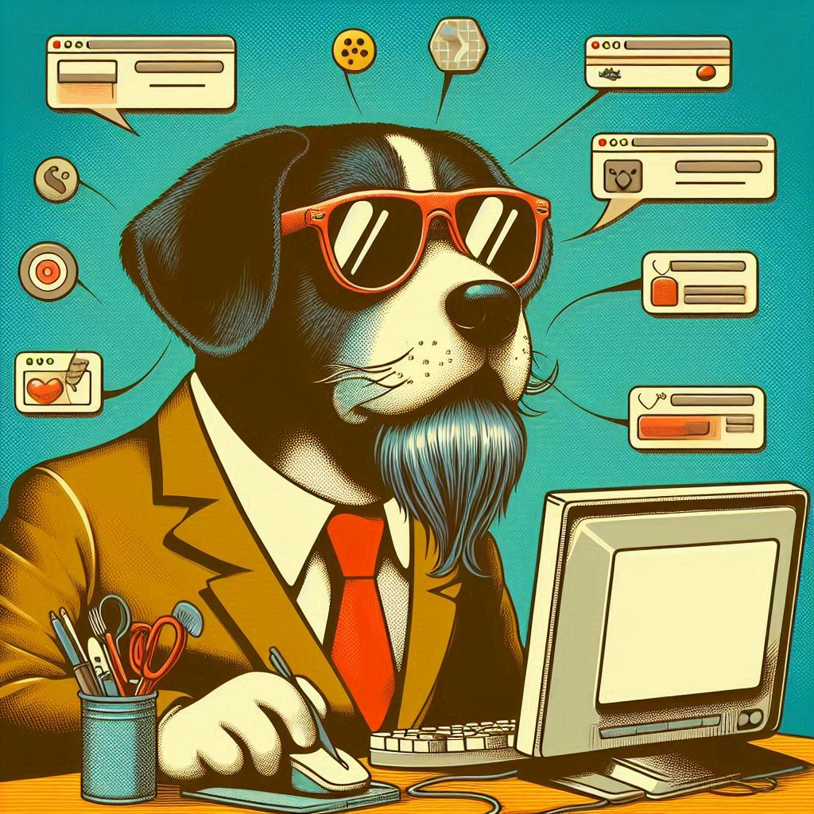

Desenvolvedor
Front End &
UX/UI Designer
Localizado em Recife - PE

Localizado em Recife - PE
Desenvolvo pequenos projetos como o Robocraft utilizando apenas HTML, CSS e JavaScript. Para aplicativos web, como a rede social Dogs, eu trabalhei no UX e UI Design do projeto.
No projeto Robocraft eu trabalhei no desenvolvimento completo do HTML, CSS e JavaScript do site. Além disso, também prestei consultoria no Design.
Minha mais recente experiência acadêmica foi o mestrado que fiz no exterior em UX Design. Além disso me mantenho sempre atualizado com cursos intensivos online.
BACHAREL
Harvard
Estou disponível para novos projetos no momento.
Entre em contato comigo e marcamos uma conversa.